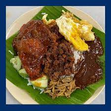
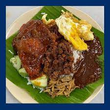
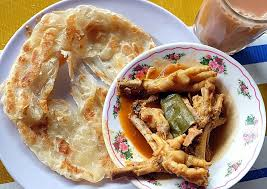
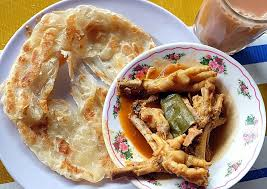

WHAT TO DO WHEN VISITING KAMPUNG BARU?
Historical Place
It's a great chance to travel back in time and experience Kuala Lumpur
in the early 20th century by going to the Kampung Baru neighbourhood.
In reality, Kampung Baru is a traditional Malaysian neighbourhood that
was built more than a century ago. Even though they are located in the
middle of the city and surrounded by gleaming skyscrapers, many of the
homes are wooden houses that are sitting on short stilts. The
neighbourhood has a strong rural village vibe.
Here are some of the place that worth a visit:

Master Mat's House
This wooden home, built by a well-known former headmaster, stands out for its vivid blue colour, stone pillars, and curved staircase. The Master Mat family still resides here, and it is the third generation.

Kelab Sultan Suleiman Gallery
This historic structure shows Malaysia's history from its earliest days through the colonial era. Its design is based on the Suleiman Social Club's second renovation.

Masjid Jamek Kampung Bharu
For more than a century, the neighborhood's Muslims prayed in this beautifully elegant mosque. For the daily breaking of the fast and other charitable events throughout the fasting month of Ramadan, the mosque serves as the main gathering place.

Rumah Limas
Originally constructed in 1931 and post-war rebuilt in 1949, this is a traditional Malay home. It would have been one of the larger homes of the era, but today, the vast urban development taking position all around it has made it insignificant.
Food Hunting
Visitors to Kampung Baru have the chance to try a variety of yummy meals
in addition to seeing the town's historical sites.
Following are a few
locations in Kampung Baru that are worthwhile visiting:
 
Nasi Lemak Wanjo
This restaurant has been in business for more than 50 years and was previously known as nasi lemak mak wanjo. Yet, because it is open until late at night, locals continue to come here for meals and supper.

Malay Food Streets (Jalan Raja Muda Musa)
As Malay food stalls prepare their goods in the evening, this area releases mouthwatering aromas. The food is tasty and affordable here. Local favourites include tapai, a sweet fermented rice dessert frequently wrapped in banana leaves, nasi ayam goreng (fried chicken rice), nasi lemak antarabangsa (international nasi lemak), and chicken skewers drenched in peanut sauce with crispy shallots.
 
Warung Pak Hassan Kampung Baru
Another well-known restaurant in Kampung Baru for its different roti canai served with chicken feet is Warung Pak Hassan. One of Kampung Baru's top roti canai restaurants is Warung Pak Hassan. Customers must wait in queue for a while at the shop because there is always a long queue. The restaurant is a self-service establishment, so you queue, choose what you desire and pay for it at the checkout counter.

Cendol Durian Kampung Baru
Cendol Durian Kampung Baru is a well-known cendol that is located in Jalan Raja Alang. Big chunks of durian flesh are included with the cendol, which is also incredibly inexpensive. Any fan of cendol and durian should at least once try this experience.
Image
LINK TO SOCIAL MEDIA


More Picture at Website

Contact
PERBADANAN PEMBANGUNAN KAMPONG BHARU (PKB) Aras Bawah, 1 & 2, Lot 61 Rumah Rohas, Jalan Raja Abdullah, Kampong Bharu, 50300 Kuala Lumpur
Email:webmaster[at]pkb.gov.my pertanyaan[at]pkb.gov.my
Fax:+603–2693 4733
Hotline:+603–2692 6733